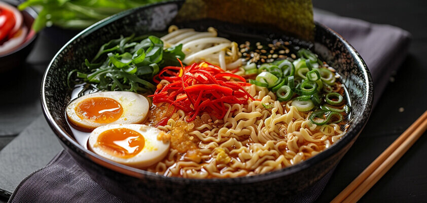
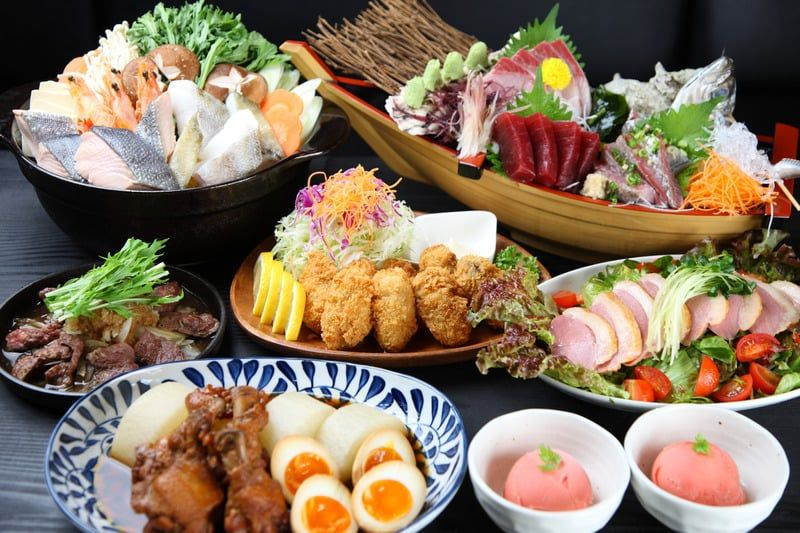
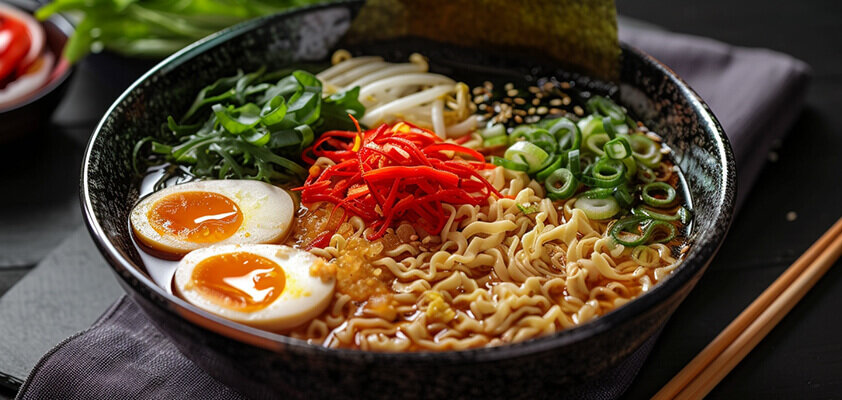
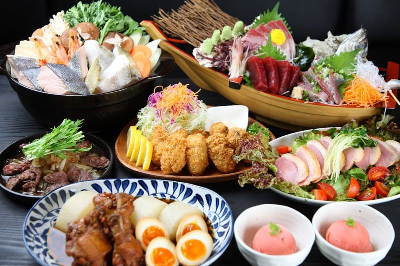
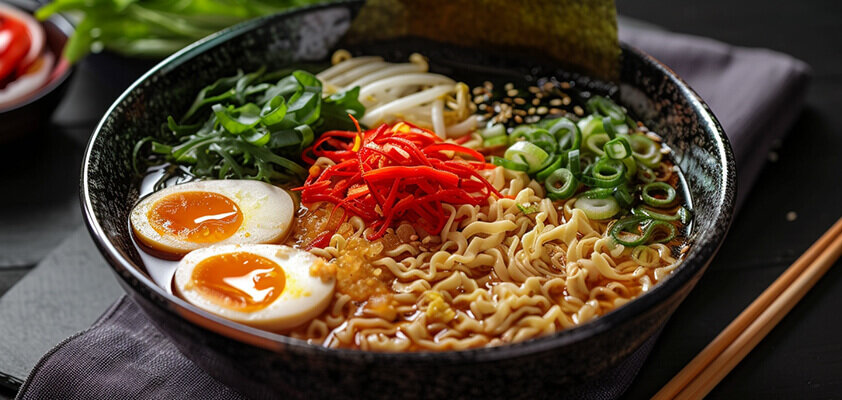
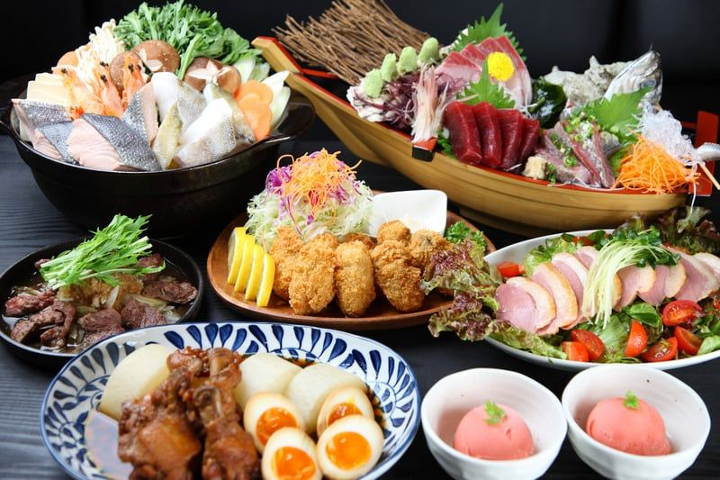

Japanese cuisine is a unique and diverse style of cooking that is known for its emphasis on fresh, seasonal ingredients, delicate flavors, and beautiful presentation. It's one of the most popular and influential cuisines in the world, with a long and storied history that dates back centuries.

